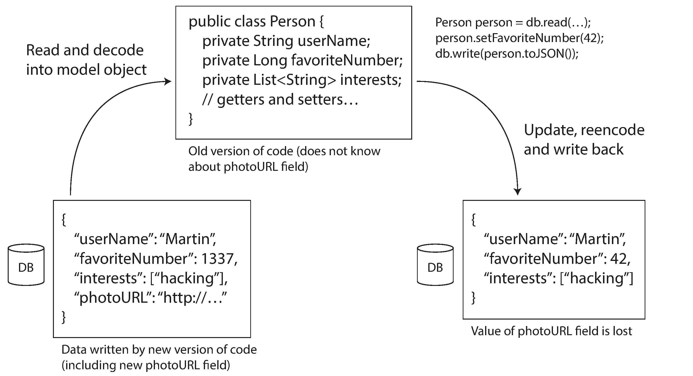
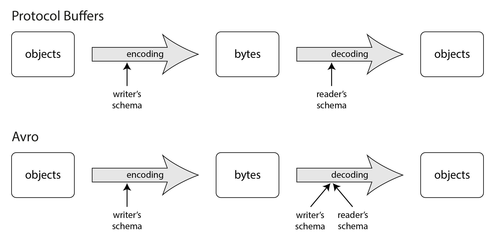

术语表 · 第 5 章 · 课程 5 / 14
编码与演化
滚动升级期间，同一份数据会被两个版本的代码读写。这一章讲的是：你能不能在不为「旧代码读到新数据」写分支的前提下，安全地加一个字段。答案取决于你选了哪种字节格式，而不是取决于你多小心。
唯变所适。
以弗所的赫拉克利特，引自柏拉图《克拉提鲁斯》（公元前 360 年）
5.1为什么「加个字段」是分布式系统的经典事故
先把场景钉死，因为这一章很容易被读成「序列化格式对比」，那样就白读了。
你的服务有 20 个实例，跑在 Kubernetes 上。产品要加一个字段：订单表多一个 coupon_id。你改代码、加字段、跑测试、通过。然后滚动升级：先换 2 个实例，观察 10 分钟，再换剩下的 18 个。在这 10 分钟里，集群里同时跑着两个版本的二进制。旧版本读一行、改一个字段、写回去——它不认识 coupon_id，于是把它弄丢了。这不是并发 bug，也不是丢包，是编码层的问题：解码成内存对象时，未知字段没有被保留。
这就是图 5-1 要说明的事：任何「读—改—写」路径，都会把解码器不认识的信息抹掉一次。你写 SELECT * 然后 UPDATE 整行，就等价于做了一次「解码 + 丢未知字段 + 编码」。

所以这一章真正的主题不是「哪种格式更快」，而是可演化性（evolvability）在字节层面的三个具体判据：
向后兼容（backward compatibility）
新代码能读旧代码写的数据。这个通常不难：新代码的作者知道旧格式长什么样，可以显式处理。绝大多数「加字段」都要求这一条。
向前兼容（forward compatibility）
旧代码能读新代码写的数据。这个难得多，因为旧代码必须忽略它不认识的东西，还得原样保留。滚动升级期间，数据库里既有新代码写的行，也有旧代码写的行，两条方向都必须成立。
注意这两个词的方向常被记反。一个记忆锚点：向前兼容是「向前看」，也就是老代码面向未来。它比向后兼容难，因为老代码是被动的一方，它没有为新字段预留任何逻辑。
5.2三种格式，三种失败方式
书里按「谁在编码、谁在解码」把格式分成几类。对架构评审来说，把它们压缩成一张表就够了。
表 5-1 里的「兼容性来源」一列是这章最有用的东西：它告诉你兼容性是从哪里获得的，而不是靠纪律维持的。
| 格式 | 兼容性来源 | 典型失效方式 | 什么时候可以接受 |
|---|---|---|---|
| 语言内置（Java 序列化、Python pickle、Ruby Marshal） | 几乎没有，事后才考虑 | 反序列化要实例化任意类，是远程代码执行漏洞的经典来源；换语言就废 | 几乎从不。除非数据活不过一次进程重启 |
| 文本（JSON / XML / CSV） | 靠约定与可选模式 | 数字精度、二进制串、模式语言过重 | 跨组织交换；对可读性有硬需求；数据量小 |
| 二进制 + 模式（Protobuf / Thrift） | 字段标签号（field tag） | 标签号被回收复用，旧数据被解成错字段 | 服务间 RPC、需要紧凑与代码生成 |
| 二进制 + 模式（Avro） | 写入者模式 ↔ 读取者模式的显式解析 | 加字段没给默认值，旧数据读不了 | 大文件归档、模式动态生成（如整库导出） |
JSON 的那个 2⁵³ 陷阱
JSON 看起来无害，但它有一个对底层读者特别刺眼的缺陷：不区分整数与浮点数，也不规定精度。IEEE 754 双精度能精确表示的整数上限是 2⁵³（约 9.007×10¹⁵）。超过这个值，用浮点解析就会失真。书里给的真实例子是 X（原 Twitter）的 64 位帖子 ID：为了让 JavaScript 客户端正确解析，API 里把同一个 ID 返回两次——一次当 JSON 数值，一次当十进制字符串。
这不是历史趣闻。任何「用整数当主键、且主键由雪花算法或数据库自增产生」的系统，只要有一个 JavaScript / Lua / PHP 客户端，就踩在这条线上。评审时该问的问题是：这个字段的 ID 类型，在所有消费方语言里都能精确表示吗？
JSON 的第二个坑是二进制。JSON 不支持字节串，业界通行的绕法是 Base64，代价是体积涨 33%，而且「这个字段该按 Base64 解读」这条信息只能写在模式或文档里。CSV 更糟：连「这一列是数字还是恰好由数字组成的字符串」都区分不了，一旦值里出现逗号或换行就全靠转义规则，而并不是所有解析器都正确实现了它。
5.3Protobuf：兼容性来自「标签号永不重用」
Protobuf 的核心机制只有一句话：编码数据里不写字段名，写字段标签号。书里的例子，同一条记录 JSON 文本 81 字节，MessagePack 66 字节，Protobuf 33 字节，Avro 32 字节。差距来自字段名被换成了 1、2、3 这样的小整数，再配上变长整数编码。
一条编码后的记录，就是各个已编码字段的拼接。每个字段由标签号标识，并带有数据类型注解。如果某个字段没有值，就直接从编码记录中省略。字段标签对编码数据的含义至关重要：模式中的字段名可以修改，因为编码数据从不引用字段名；但字段标签不能修改，否则现有的所有编码数据都会失效。
删除字段与添加字段类似，只是向后兼容和向前兼容的考量正好相反。已经用过的标签号绝不能再次使用，因为某处可能仍有带着旧标签号的数据，而新代码必须忽略这个字段。可以在模式定义中把用过的标签号标记为保留，确保以后不会忘记。
把这段话翻译成评审语言：Protobuf 的兼容性是一条「单向棘轮」。标签号只能增加、不能回收，字段只能标记 reserved 不能真删。这条规则不是风格建议，是唯一防止「旧数据被解成另一个字段」的机制。
书里还提了类型变更的边界：32 位整数改 64 位，新代码读旧数据没问题（解析器用零补齐），但旧代码读新数据时，值一超出 32 位就会被截断。这类问题的麻烦之处在于它不报错——你得到的是一个语法合法、语义错误的值。
5.4Avro：把「谁的模式」变成协议的一部分
Avro 的编码更紧凑（32 字节），原因是它连类型标签都不写：二进制就是一串值的拼接，字段顺序和类型完全由模式决定。代价很直接——读写双方的模式必须严格配对。
那它怎么支持演化？书里的答案是两个模式：
写入时用写入者模式（writer's schema），它可能已经编译进应用程序。解码时用两个模式：与编码时完全相同的写入者模式，以及可能有所不同的读取者模式（reader's schema）。
第 5 章 · 写入者模式与读取者模式
解码时，Avro 把两个模式并排比较，把数据从前者翻译到后者：字段按名字配对，所以顺序不同没关系；读取者模式里没有的字段忽略；读取者需要而写入者没有的字段，填读取者声明的默认值。

演化规则因此可以压缩成一句话：只能增删「带默认值」的字段。
加一个没默认值的字段
新版模式写、旧版模式读：读取者遇到写入者模式里没有的字段，得填默认值，没有默认值就填不出来——破坏向后兼容。
删一个没默认值的字段
旧版模式写、新版模式读：新版读取者需要的字段在写入者里不存在，同样填不出——破坏向前兼容。
另一个底层读者会在意的点：Avro 对动态生成的模式友好得多。把关系库整库导出时，可以从数据库表结构直接生成 Avro 模式，加一列、删一列都能自动重生成；而 Protobuf 的标签号必须手工分配，模式生成器还得格外小心不能复用旧号。这就是书里说的「动态生成模式从来不是 Protobuf 的设计目标，却是 Avro 的设计目标之一」。
顺带解决一个读者必然会问的问题：读取者怎么知道这段字节对应哪个写入者模式？ 答案分三种场景：大文件（Avro 对象容器文件）在文件头写一次；数据库逐条记录则在每条记录前缀一个版本号，再从这个版本号查模式注册表（Kafka 的 Confluent Schema Registry、LinkedIn 的 Espresso 都是这么干的）；双向连接则在建连时协商一次，整个连接生命周期沿用。三种做法的共同点是：维护一个模式版本库，它既是文档，也是部署前做兼容性检查的抓手。
5.5数据流：同一套兼容性问题，四种拓扑
编码格式本身不谈数据往哪流。书里把数据流分成四类，每一类的兼容性约束不一样——这一节是这一章最该背下来的部分，因为面试最爱在这里追问。
流经数据库
写库的进程编码，读库的进程解码。最容易被忽略的一点是：数据库里的数据比代码长寿。你部署新版本只要几分钟，但五年前写进去的行还在原处，编码还是当年那版的。所以数据库「通常也需要向前兼容」——因为滚动升级期间，新版本写的行会被旧版本读到。
部署新版应用程序时——至少对服务端应用程序而言——可能只需几分钟就能用新版本完全替换旧版本。但数据库内容不是这样：除非显式重写，五年前的数据仍会以最初的编码留在那里。这种现象有时概括为：数据比代码更长寿。
当然，可以把数据重写（即迁移）到新模式，但对大型数据集来说代价高昂，所以大多数数据库都会尽量避免。大多数关系数据库允许某些简单的模式变更，例如增加一个默认值为 null 的新列，而不必重写已有数据。读取旧行时，如果磁盘上的编码数据缺少某一列，数据库便为它填入 null。因此，模式演化让整个数据库看上去仿佛都用同一个模式编码，尽管底层存储中可能混有按各个历史版本模式编码的记录。
这段里最值钱的是最后一句：「看上去仿佛都用同一个模式编码」是一种幻觉，由读取路径上的默认值填充造出来的。你在 psql 里 SELECT * 看到整齐的 12 列，不代表磁盘上的行是 12 列——五年前的行可能只有 9 列，另外 3 列是读的时候现填的。这也解释了为什么「加一列带默认值的字段」在 Postgres 里是毫秒级的，而「改一个字段的类型」可能锁表几小时：前者只改元数据，后者必须重写每一行。
但更复杂的变更（单值改多值、数据搬到另一张表）还是得重写，而重写期间的兼容性至今仍是个研究问题。所以实践中的做法是「扩展—收缩」（expand-contract）：先加新列并双写，回填历史数据，切读路径，最后删旧列——每一步都可回滚，代价是你得容忍一段时间内两套数据并存。
流经服务：REST 与 RPC
书里列了 RPC 与本地函数调用的六条差别，其中三条对架构决策影响最大：
一、超时是一种本地调用没有的结果
本地函数要么返回、要么抛异常、要么永不返回。网络请求还有第四种：超时。超时时你不知道请求有没有送达。这条不确定性会一路传染到你的重试策略、幂等设计和告警口径上。
二、重试会重复执行
原请求可能已经成功，只是响应丢了。重试就让同一操作执行两次——除非协议内置去重，也就是幂等性（idempotence）。这是「恰好一次」（exactly-once）这个说法的真实来源。
三、延迟分布不是常数
本地调用耗时稳定，网络请求顺利时不到一毫秒，拥塞或过载时同一个操作可能几秒。所以你只能谈 p99，不能谈平均值——这条直接影响超时设多少、重试几次。
书里对「让远程调用看起来像本地对象」这件事的结论很干脆：没必要强求远程服务看起来像本地对象，因为两者从根本上就是不同的东西。REST 的一部分吸引力，正是它把网络上的状态传输当成一件有别于函数调用的事。
服务流有一个可以做的简化假设：先更新所有服务端，再更新客户端通常是合理的。所以请求只需向后兼容（新服务端读旧客户端发的请求），响应只需向前兼容（旧客户端读新服务端发的响应）。这个不对称是评审时该写进文档的：它解释了为什么你可以「只给响应加字段」而不必给请求加。
流经工作流引擎
持久化执行（durable execution）这一节是第二版新增的，对做支付、订单、对账的人极其实用。它的机制是：框架把所有 RPC 和状态变更记进预写日志（WAL），任务失败重跑时，表面上是重新发起调用，实际直接返回上次调用的结果。于是你可以得到「恰好一次」的语义，即使调用的是你无法控制的第三方支付网关。
代价写在书里，而且很刺眼：框架按顺序记录每次调用，所以要求后续执行以同样的顺序发起同样的调用。仅仅调整函数调用顺序，就可能引入未定义行为。而且重放要求代码是确定性的：随机数、系统时钟都会出问题，框架通常提供自己的确定性实现，但你必须记得用。
这不是理论风险。它意味着你的业务代码一旦进了工作流引擎，就获得了「不可随意重构」的属性。评审时该问：这段编排逻辑未来半年会改几次？如果答案是「经常」，把它塞进持久化执行就是在给自己上枷锁；而如果它是一段对账流程——顺序稳定、出错必须重试——那这个代价换来的恰好一次非常划算。
事件驱动与消息代理
消息代理（message broker）相比直接 RPC 的优点是具体的：接收者不可用或过载时充当缓冲区；能向崩溃恢复的进程重投消息；不需要服务发现；能把同一条消息发给多个接收者；从逻辑上解耦发送者与接收者。
但对这一章来说，关键的一条是：如果消费者把消息重新发布到另一个主题，必须保留未知字段。理由和 5.1 里那个「旧代码回写丢字段」完全一样——重新发布就是一次解码加编码。消息流里这条规则被违反的概率比数据库里高，因为「转发」看起来是无害的。
5.6反例：一次「无害的字段重命名」
反例
一个订单服务用 Protobuf 和三个下游服务通信。某次重构，团队觉得 user_id 这个名字不够准确，改成 customer_id，并且「顺手清理」了旧的 user_id 字段定义，把编号 7 空出来留给后面一个新字段用。
发布流程：先发订单服务（生产者），再逐个发下游消费者。持续了两周。
① 下游还没升级的那几个服务，收到编号 7 的字段时按旧定义解析，得到了一个语义完全不同的值——不报错，只是数据错。② 空出来的编号 7 被两个月后的另一个需求用上，历史数据（Kafka 里还留着 7 天、备份里留得更久）里编号 7 的含义变成了第三种。③ 改名本身其实是安全的（编码不引用字段名），真正致命的是回收编号——而这个决定和改名混在同一次提交里，评审时没人注意到。
根源：把「重命名字段」和「回收标签号」当成同一件事。前者无害，后者是永久性破坏。
改法：重命名随便改，加 reserved 7; 并在 CI 里加一道检查——用 buf breaking 之类的工具比对上一版的 .proto，标签号被删或类型被改就直接失败。这道检查的成本是一行配置，收益是把「两周后才发现的静默数据错误」变成「提交时就红」。
5.7反例二：向前兼容在数据库里静默失效
反例
一个用 JSON 存业务对象的服务。所有实体统一存成一列 payload jsonb。ORM 把整条记录映射成结构体，改一个字段就 UPDATE 整行。团队的理由是「JSON 是 schemaless 的，加字段不用迁移」。
schemaless 只保证写的时候不校验，不保证读—改—写的往返无损。滚动升级期间，旧版本实例的结构体里没有新字段，它读一行、改一个无关字段、写回去，新字段就消失了。这个丢失不会报错、不会留下日志、测试也测不出来，因为单版本测试环境里永远只有一个版本在跑。
更麻烦的是排查：用户投诉「我刚填的优惠券丢了」，你去查数据库，看到的是一条完全合法的旧数据，找不到任何异常。
改法有三条，按代价从低到高：① 写入路径改成局部更新（UPDATE ... SET status = ?，或 jsonb 的 || 合并），永远不要把整行解出来再整体写回；② 如果必须整体写回，让解码器保留未知字段（很多语言的 JSON 映射库有这个开关，Go 的 map[string]any、Rust 的 serde_json::Value 天然保留）；③ 真正需要强保证的地方，换成带模式的二进制格式，让「未知字段」在类型层面就存在。
顺带一个判据：如果一个字段只被「展示」而不被「参与计算」，把它留在 JSON 里没问题；如果它参与计算，就该给它一个列。
5.8面试里怎么答
如果被问「为什么不用 JSON，要用 Protobuf」
「三个理由，按重要性排：第一是兼容性可验证，Protobuf 的字段标签号提供了机器可检查的兼容规则，JSON 只能靠人盯着 review；第二是体积和解析开销，同一条记录 JSON 文本 81 字节、Protobuf 33 字节，字段名在每次传输里被重复了；第三是代码生成带来的编译期类型检查。但反过来我也接受 JSON 的代价：它人类可读、不需要模式注册表、跨组织交换时对方零成本接入。所以我的判据是跨组织用 JSON，组织内部服务间用 Protobuf。」
再加一层能立刻区分深度的答法：如果被追问「那 schema 演化出问题怎么办」，答案要具体到机制——「字段标签号只增不减，删除的标记 reserved；CI 里跑 breaking change 检查；数据库里存 Protobuf 的列，我还会额外要求每条记录带模式版本号，因为存量数据的模式版本和当前部署的版本不是一回事。」
最后一句可以收在取舍上：「Protobuf 换来的不是性能，是把兼容性从纪律变成机制。代价是数据不可读，排查问题时得多一步 decode——我认为这个代价值得，因为纪律会随人员流动衰减，机制不会。」
5.9带走什么
这一章给了一个可以立刻执行的动作：打开你的服务，找出所有「读整行、改一个字段、写回整行」的代码路径。每一条都是一次潜在的字段丢失，而且它在单版本环境里完全无害，只在滚动升级的窗口里发作。
贴进评审文档的话：「本服务与下游之间使用 Protobuf，字段标签号只增不减，删除字段标记 reserved 并在 CI 中做 breaking change 检查。数据库列存 Protobuf 字节，每条记录前缀模式版本号以支持存量数据解码。已知放弃的保证：跨版本回滚不支持——回滚到上一版本时，新版本写入的字段会被旧版本忽略但保留，需要人工清理。」
练习这段变更兼容吗
四个真实的模式变更。判断它对滚动升级是否安全，注意有些答案取决于细节。
Protobuf 消息里加一个新字段 optional string region = 8;，服务端先发布，客户端两周后发布。
新编号 + 可选类型，这是教科书级的兼容变更：新代码读旧数据填默认值（向后兼容），旧代码读新数据忽略未知字段（向前兼容，前提是解析器保留未知字段）。这类变更不需要协调发布时间，这正是它值钱的地方。
Avro 记录里加一个字段，类型是 long，没有写 default。旧数据文件是用旧模式写的。
新读取者读旧数据时，这个字段在写入者模式里不存在，必须填默认值——没有默认值就填不出来，直接失败。规则就一句：Avro 只能增删带默认值的字段。加字段时忘了写 default 是最常见的一种。
数据库表加一列 coupon_id，默认 NULL；应用代码用 ORM 的「读实体—改字段—保存实体」路径更新订单。
「加列不必重写数据」只解决了存储层的兼容，没解决应用层的兼容。滚动升级窗口里，旧版实例的实体类里没有这个字段，读—改—写一次就把它写没了。要么改成局部 UPDATE，要么让映射层保留未知列。
消息消费者从 orders 主题读消息，加工后转发到 orders-enriched 主题。转发时把消息反序列化成结构体再序列化。
「转发」在字节层面就是一次解码 + 编码。上游加了字段、下游消费者还没升级，这个字段就在这两跳之间蒸发了，而没人会去查中转服务。修法是转发时保留原始字节，或者用能携带未知字段的容器类型。
练习选一个格式
你要做一个事件溯源（event sourcing）系统：所有领域事件追加写进一个不可变的日志，保留七年，供多个不同团队的分析作业读取，也供将来的重放重建状态。数据量大约每天 2 亿条事件。请给出格式选择，并说明你放弃了什么。
提示：七年这个数字改变了什么？「多个团队读取」又改变了什么？
选带模式的二进制格式 + 独立模式注册表，具体可以是 Avro 或 Protobuf，判据在下面三条。
一、七年意味着模式一定会变很多次，而且旧数据永远不会被重写。 这直接排除「靠迁移重写历史数据」这条路：2 亿条/天 × 365 × 7，重写一遍的代价不可接受。所以必须选一个「解码时能协调两个模式」的格式，也就是 Avro 的写入者/读取者模式，或者 Protobuf 的标签号永不回收。文本格式（JSON）在这里也能用，但你会为「这一列到底是数字还是字符串」付七年的利息。
二、多个团队读取意味着消费方不受你控制。 这是 Avro 双模式机制真正值钱的地方：每个消费者带着自己的读取者模式来读，加字段、删字段都能在解码时协调，不需要通知所有人。反过来，如果只有你一个消费方，JSON 就够，因为它省掉了模式注册表这一整套基础设施。
三、事件不可变，所以「向前兼容」不是问题，「向后兼容」才是全部。 事件一旦写入就不再修改，所以永远不会有「旧代码回写覆盖新字段」的风险（对比数据库那节的场景）。你需要保证的只是：任何未来的读取者都能读懂七年前的事件。
放弃了什么，要写清楚：① 数据不可直接人类阅读，排障时多一步 decode，所以要配一套把事件 dump 成 JSON 的命令行工具，这不是可选项；② 引入模式注册表这个新的有状态依赖，它挂了写入就挂，所以它本身要高可用——很多人在这里低估了成本；③ 字段名不能再改（Avro 可以用别名，但那又是一层要维护的映射）；④ 保留七年意味着任何一次破坏性变更都是永久的，所以 CI 里的兼容性检查不是「最好有」，而是这套系统能不能活下去的前提。
一个诚实的补充：如果这 2 亿条事件里 95% 只有 5 个字段、结构极其稳定，那么用 JSON 加外部的 JSON Schema 校验也完全能撑七年。判据是「模式变更频率 × 消费方数量」，不是「二进制永远更专业」。
一手资源
第 5 章 编码与演化（中文全译） — 值得对照读的是它把 MessagePack、Protobuf、Avro 三种编码的逐字节拆解并排放置的部分，看完你就能一眼看出「为什么 Avro 能到 32 字节」。
随时问我
把你服务里那个 .proto 或 schema.avsc 贴给我，顺便说一下你们的发布顺序（先服务端还是先客户端）。我帮你把「下一次加字段会在哪一步炸」标出来，通常不超过三个位置。